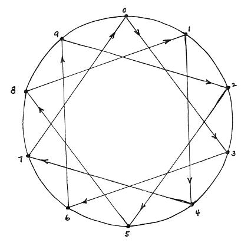
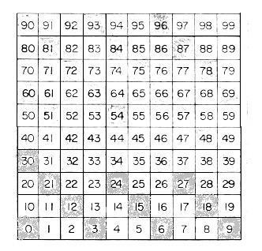
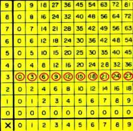
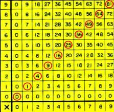
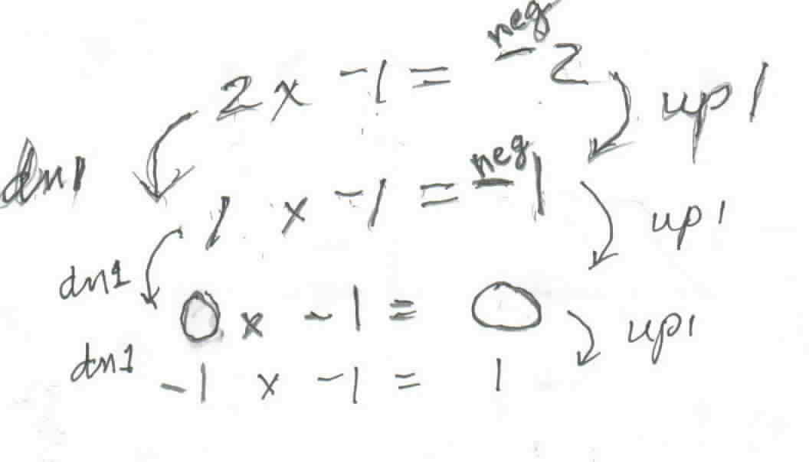

29 ways to look
at multiplication
i. as repeated addition
3+3=2x3
ii. as intersections

6 intersections
iii. as combinations: 2 shirts (s1 , s2)
to go with 3 pair of pants (p1, p2,
p3) = 6 outfits (s1
, p1), (s2 , p1),
(s1 , p2), (s2
, p2), (s1 , p3),
(s2 , p3)

iv. as area of a rectangle A=l*w a POWERFUL idea
v. as a pattern or shape of numbers
(triangular, square numbers..)
vi. as a mapping

vii. as a function f(x) =2x
viii. in open sentences: 2m=8 same as 2*m=8
ix. as related to other operations
a/b = a*1/b (a divided by b = a times the reciprocal of b); 2x=x+x
x. with different kinds of numbers- whole numbers, fractions,
decimals, imaginary numbers, complex numbers
xi. on one number line
xii. on 2 parallel lines
xiiia. on 2 crossed
number lines; the graph of 2x=y
(graph of 2x table)
xiv. The 2-times
table on a 72-dot circle: x
-> 2x; 1->2, 2->4, 3->6, ..

xv. Multiples of a
number -> LCM
xvi. factors of a
number -> GCF
xvii. Graph of l vs
w of rectangles of area 6 or xy=6

xviii
Units digits of the multiples of 3 on a 10-point circle

xix.
As patterns in a 100-chart- fill in the rest of the multiples of 3

xx.
As patterns in the multiplication tables
-the
3x table below

-and
the square numbers below:

xxi. The 3D
Multiplication Tables
xxii. “unusual”
multiplication tables to fill in- make your own
xxiii. Use a
calculator to do 27x5, say 10 different ways
xxiv. Using Napier’s
“Bones” to multiply 26x3- now called "lattice arithmetic". The 2 times table follows down under the 2 and the
6 times table follows down below the 6, each number written with two digits, and
each marked with a diagonal line between the two digits. The rod at the right is
the multiplying number. The answer is read to the left of the 3 along the
diagonals: 0, 1+6, 8 or 078 = 78. Made out of wood, each multiplication ‘rods’
can have 4 tables, and when put together, they sound like “bones” clinking
together, hence the name, Napier’s “Bones”.

xxv. Using repeated
multiplication 3x3x3x3= 34 to get exponents
xxvi. multiplication
of signed numbers

or Postperson stories- Bob Davis
See
Sheri's work on graphing parabolas where she does
this above.
xxvii. In growth
and form in nature (length, area and vol., in Chapter 6)
xxiii. Using the
distributive property
a(b+c)=ab+ac
xxix. Applications of
multiplication
xxx. The language
of multiplication
- times, product, factor, common multiple, least common factor, distributive
property, law for 0: a*0=0, multiplicative identity x*1=x